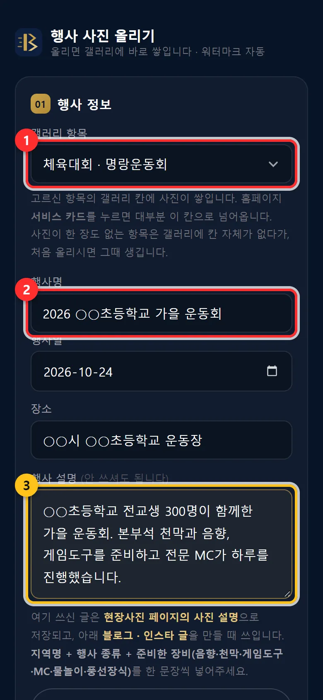
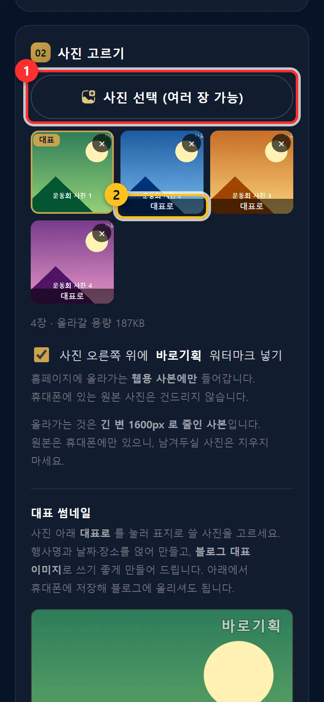
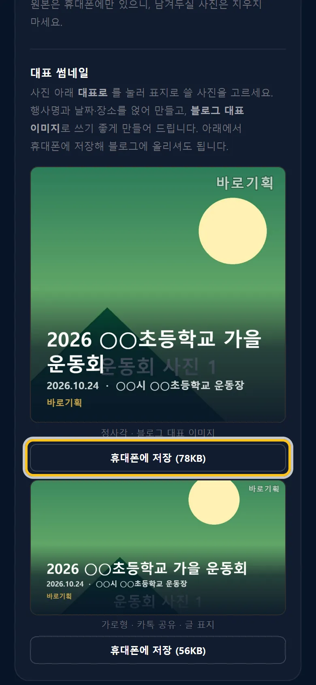
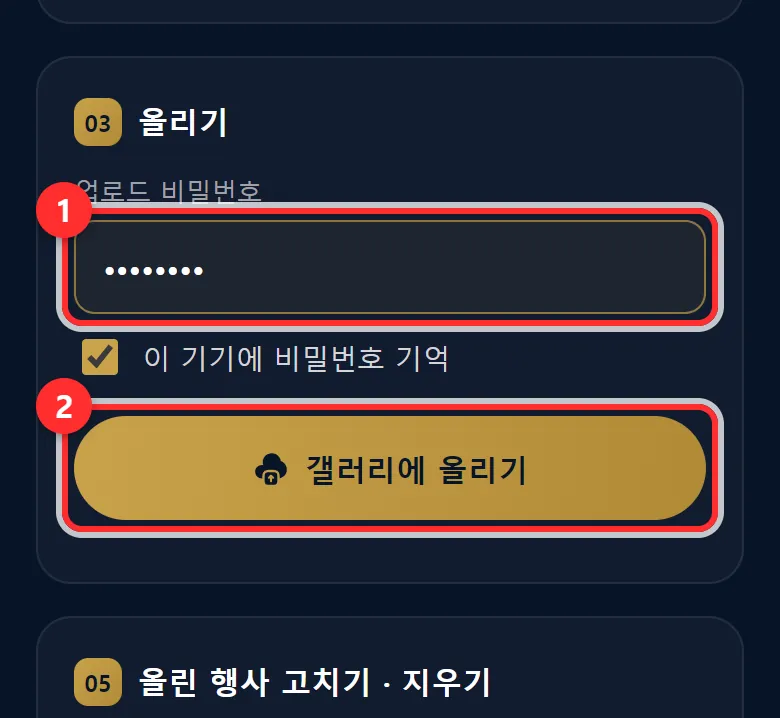
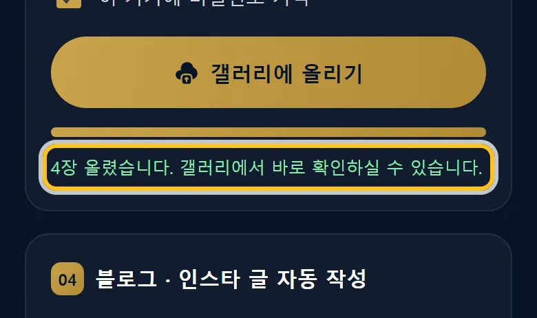
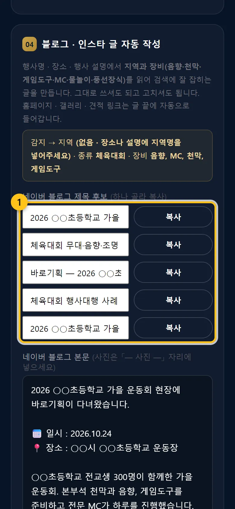
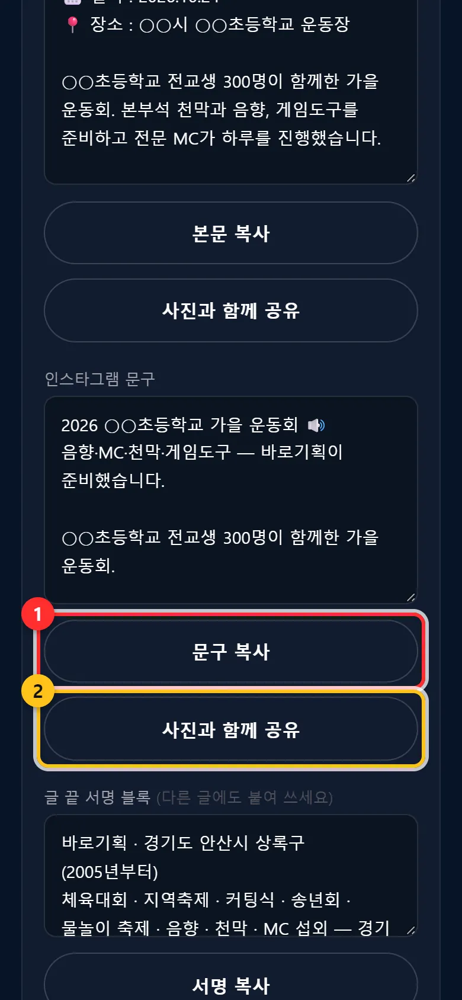

현장 사진 올리기 + 블로그 · 인스타 글
행사 사진을 폰에서 골라 올리면 홈페이지 현장사진 페이지에 붙고, 블로그 · 인스타그램에 올릴 글까지 만들어 줍니다.
우리홈페이지주소/upload.html언제 쓰나요
- 행사가 끝난 날, 현장에서 바로 — 폰으로 하면 가장 쉽습니다.
- 사진이 꾸준히 쌓이면 손님이 믿고, 검색에도 잘 잡힙니다.
이렇게 하세요
행사 정보를 적습니다
「갤러리 항목」(체육대회 · 지역축제 · 공연 · 물놀이 · 커팅식 · 장비)을 고르고 「행사명」 · 행사일 · 장소를 적습니다. 「행사 설명」은 안 써도 되지만, 지역 + 행사 종류 + 준비한 장비를 한두 문장 쓰면 사진 설명과 블로그 글이 좋아집니다.

① 갤러리 항목 ② 행사명 ③ 행사 설명 「사진 선택 (여러 장 가능)」
폰 앨범에서 여러 장을 고릅니다. 잘못 고른 사진은 × 로 뺍니다. 표지로 쓸 사진은 대표로를 누릅니다. 「워터마크 넣기」를 켜 두면 홈페이지에 올라가는 사본에만 회사 이름이 들어갑니다.
올라가는 것은 줄인 사본이고 원본은 폰에만 있습니다. 남길 사진은 폰에서 지우지 마세요.

① 사진 선택 ② 대표로 
대표 썸네일 — 「휴대폰에 저장」으로 블로그 대표 사진에 씁니다 비밀번호를 넣고 「갤러리에 올리기」
「업로드 비밀번호」(사진 올리기 암호)를 넣습니다. 「이 기기에 비밀번호 기억」을 켜 두면 다음엔 안 넣어도 됩니다. 갤러리에 올리기를 누르면 「올리는 중… 1 / 4」처럼 진행이 보입니다. 끝날 때까지 화면을 닫지 마세요.

① 비밀번호 ② 갤러리에 올리기 
다 올라가면 「○장 올렸습니다」 블로그 · 인스타 글을 복사합니다
다 올라가면 「04 블로그 · 인스타 글 자동 작성」이 열립니다. 블로그 제목 후보 중 하나를 복사, 본문은 본문 복사, 인스타는 문구 복사. 사진과 함께 공유를 누르면 폰 공유창이 열려 네이버 블로그 · 인스타그램으로 사진과 함께 넘길 수 있습니다.
올리기 전에 미리 보려면 위쪽 블로그 · 인스타 글 미리 만들기.

① 제목 후보 ② 본문 복사 
① 인스타 문구 복사 ② 사진과 함께 공유 올린 행사 고치기 · 지우기
맨 아래 올린 행사 목록 불러오기를 누르면 이미 올린 행사의 이름 · 날짜 · 장소 · 설명을 고치거나 사진을 지울 수 있습니다(비밀번호 필요).
자주 하는 실수 · 질문
사진이 안 올라가요
- 비밀번호를 확인하세요. 틀리면 상태 줄에 「실패: …」가 나옵니다.
- 「사진 한 장을 읽지 못했습니다」 — 그 사진만 빼고 다시 하거나, 다른 사진으로 바꾸세요.
- 「사진은 올라갔지만 갤러리 목록 갱신에 실패했습니다」 — 안내대로 갤러리에 올리기를 한 번 더 눌러 보고, 몇 분 뒤에도 현장사진 페이지에 안 보이면 큰길브리지에 알려 주세요.
- 몇 장만 「실패」로 나왔다면 갤러리에 올리기를 다시 누르세요. 이미 올라간 사진은 다시 올라가지 않고 실패한 것만 다시 올라갑니다.
- 와이파이가 약하면 오래 걸립니다. 사진 수를 줄여 나눠 올려 보세요.
- 그래도 안 되면 화면의 빨간 글자를 찍어 큰길브리지에 보내 주세요.
올렸는데 현장사진 페이지에 아직 없어요
사진 목록은 몇 분 간격으로 새로 읽기 때문에 몇 분 뒤 보일 수 있습니다. 잠시 뒤 새로고침 해 보세요.
블로그 글을 그대로 써도 되나요?
써도 됩니다. 다만 매번 같은 문장이면 블로그에서 낮게 평가될 수 있어, 화면 안내처럼 한두 문장은 그날 이야기로 바꿔 주시면 좋습니다.